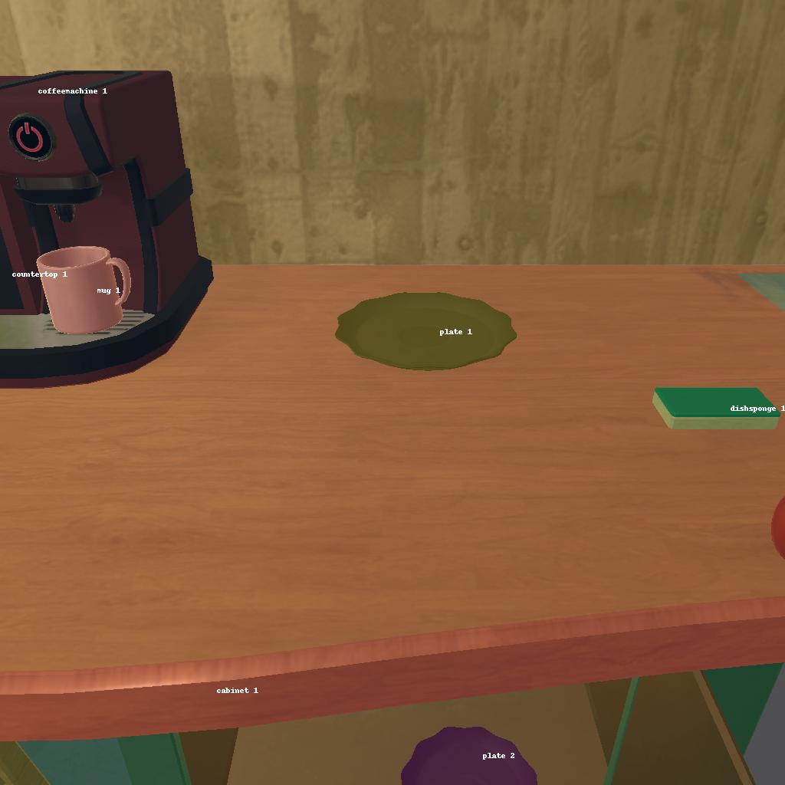

---------------------------------------------------------task: 26---------------------------------------------------------
--------------------------------------------------------------------------------------------------------------------------------------------------------------------
--------------------------------------------------------------------------------------------------------------------------------------------------------------------
Step:--------------------------------------------------------------------------2-------------------------------------------------------------------------------
----------------------------------------
VLM Prompt:
Image1:
**Instruction**
1. Analyze the provided image to identify all visible household objects, focusing on those relevant to the task description "find two kettle and put them in cabinet."
2. Use the analysis of the image and the task hint "The agent must find an object of the desired type, pick it up, find the correct location to place it, put it down there, then look for another object of the desired type, pick it up, return to previous location, and put it down there with the other object." to answer the question: what is the most reasonable action in the choices for the task description "find two kettle and put them in cabinet"?
4. Decide and write the answer using the template: The answer is: (i): , where i is the real number. If there is no desired object in the image, search every place based on **Initial Observation** to find the object. And if no one is exactly correct, choose a similar answer.
**Initial Observation**
You are in the middle of a room. Looking quickly around you, you can see countertop (1), coffeemachine (1), cabinet (1-4), drawer (1-8), sink (1), sinkbasin (1), garbagecan (1), fridge (1), microwave (1), dresser (1), sidetable (1)
**Answer Choices**
(1): go to countertop 1
(2): go to coffeemachine 1
(3): go to cabinet 2
(4): go to drawer 1
(5): go to sink 1
(6): go to sinkbasin 1
(7): go to cabinet 3
(8): go to garbagecan 1
(9): go to cabinet 4
(10): go to drawer 2
(11): go to fridge 1
(12): go to microwave 1
(13): go to dresser 1
(14): go to sidetable 1
(15): go to drawer 3
(16): go to drawer 4
(17): go to drawer 5
(18): go to drawer 6
(19): go to drawer 7
(20): go to drawer 8
(21): close cabinet 1
(22): take plate 1 from cabinet 1
(23): take mug 1 from cabinet 1
(24): take plate 2 from cabinet 1
(25): take dishsponge 1 from cabinet 1
(26): take tomato 1 from cabinet 1
(27): examine cabinet 1
**Answer**
Let's think step by step by following the instructions.
----------------------------------------
----------------------------------------
Original Response:
The task description says "find two kettle and put them in cabinet." However, there is no kettle visible in the provided image.
According to the initial observation, we have multiple cabinets numbered from 1 to 4, and the task requires finding kettles and putting them in a cabinet. It is not specified which cabinet to put them in, so any cabinet would suffice. However, we need to find the kettles first.
Since the image does not show any kettles, we must search every place based on the initial observation to find the object. Starting with the places where a kettle is most likely to be found, such as the countertop or near the coffeemachine, would be reasonable.
None of the answer choices directly state "find kettle," but the closest action that could lead to finding a kettle would be to go to locations where kettles are typically kept, like near the coffeemachine or on the countertop. However, since coffeemachine 1 is already visible and no kettle is nearby, the next reasonable action would be to check the countertops or cabinets.
The answer is: (1): go to countertop 1. If there is no kettle there, the next step would be to go to the cabinets as they are common storage areas for kettles.
----------------------------------------
----------------------------------------
>>> Refine Original VLM Response and Get Pure Action: go to countertop 1
----------------------------------------
-----------------------------------------------------------------
Running time: 27.35532569885254 seconds
Total Money: 9.300890000000008
-----------------------------------------------------------------
-----------------------------------------------------------------
Text Observation:You arrive at loc 0. On the countertop 1, you see a bread 1, a cup 1, a lettuce 1, a apple 1, and a kettle 1.
-----------------------------------------------------------------
UNSUCCEED